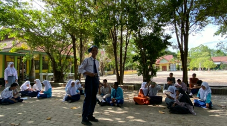

SMAN BINSUS DUMAI
Thesmartestclassus merupakan kelas 10.6 yang berada di sekolah SMAN BINSUS. unggulan kelas kami adalah karena banyak murid tahfidz...
lihat LainnyaThesmartestclassus merupakan kelas 10.6 yang berada di sekolah SMAN BINSUS. unggulan kelas kami adalah karena banyak murid tahfidz...
lihat LainnyaP5 Project Penguatan Profil Pemuda Pancasila adalah sebuah proyek yang bertujuan untuk menguatkan identitas dan profil pemuda yang berlandaskan Pancasila. Proyek ini memiliki fokus pada pemuda Indonesia sebagai generasi penerus bangsa, dengan tujuan untuk memperkuat nilai-nilai Pancasila sebagai dasar yang kuat dalam membentuk karakter dan kepribadian pemuda.
Melalui P5 Project, pemuda didorong untuk lebih memahami dan menginternalisasi nilai-nilai Pancasila, seperti persatuan, kemanusiaan, kerakyatan, keadilan sosial, dan ketuhanan yang maha esa. Proyek ini dapat melibatkan berbagai kegiatan dan program pendidikan, pelatihan, serta kegiatan sosial dan budaya yang bertujuan untuk memperkuat cinta tanah air dan rasa nasionalisme.
Dengan menguatkan profil pemuda berlandaskan Pancasila, diharapkan pemuda Indonesia akan menjadi agen perubahan positif dalam masyarakat, serta berkontribusi dalam membangun bangsa yang berdaulat, adil, dan sejahtera berdasarkan nilai-nilai luhur Pancasila.
P5 Project Penguatan Profil Pemuda Pancasila juga bertujuan untuk membentuk pemuda yang berakhlak mulia, toleran, dan menghargai keberagaman. Melalui berbagai kegiatan komunitas, pemuda diajak untuk berpartisipasi aktif dalam membangun kedekatan sosial, menghormati perbedaan budaya, dan menghargai pluralitas yang ada di Indonesia.
Selain itu, proyek ini juga mendorong pemuda untuk berperan sebagai agen perdamaian dan harmoni sosial di tengah masyarakat. Pemuda didorong untuk terlibat dalam upaya pencegahan konflik, penyebarluasan informasi yang akurat, serta membangun sikap saling menghargai dan menerima perbedaan sebagai bagian dari kekayaan bangsa.
P5 Project Penguatan Profil Pemuda Pancasila berupaya untuk menciptakan generasi muda yang peduli terhadap lingkungan, berwawasan global, dan memiliki kemampuan untuk beradaptasi dengan perubahan zaman. Pemuda didorong untuk berinovasi, kreatif, dan berani dalam menghadapi tantangan yang ada.
penting bagi sistem pendidikan untuk mengakui keberagaman kemampuan dan potensi siswa.
Dalam rangka mencapai tujuan tersebut, P5 Project melibatkan berbagai pihak, termasuk pemerintah, lembaga pendidikan, organisasi masyarakat, serta tokoh pemuda dan pemangku kepentingan lainnya. Dengan kerja sama yang sinergis, proyek ini berharap dapat menciptakan dampak positif yang berkelanjutan dalam pembentukan karakter pemuda Indonesia yang tangguh dan berintegritas.
Menanggapi P5 Project Penguatan Profil Pemuda Pancasila dapat dilakukan dengan berbagai cara yang konstruktif dan positif. Berikut adalah beberapa cara yang dapat kita lakukan untuk merespons proyek ini:
《1》Mengetahui Lebih Lanjut: Langkah awal adalah dengan mengetahui lebih lanjut tentang P5 Project Penguatan Profil Pemuda Pancasila. Mencari informasi mengenai tujuan, visi, dan misi proyek ini serta kegiatan-kegiatan yang dilaksanakan akan membantu kita memahami lebih dalam tentang inisiatif ini.
《2》Partisipasi Aktif: Jika memungkinkan, kita dapat berpartisipasi secara aktif dalam kegiatan dan program yang diadakan oleh P5 Project. Melalui partisipasi ini, kita dapat berkontribusi dalam memperkuat profil pemuda berlandaskan Pancasila dan menjadi bagian dari gerakan positif untuk membangun karakter dan kepribadian pemuda yang berkualitas.
《3》Mendukung dan Berkolaborasi: Kita dapat memberikan dukungan dalam bentuk apa pun yang mampu kita berikan, baik itu dukungan moril maupun materiil. Selain itu, berkolaborasi dengan P5 Project dan pihak terkait lainnya dapat menciptakan sinergi yang lebih kuat dalam mencapai tujuan bersama.
《4》Memberikan Masukan dan Kritik Konstruktif: Jika ada aspek dari proyek yang perlu diperbaiki atau dikembangkan, memberikan masukan dan kritik konstruktif dapat membantu meningkatkan kualitas dan dampak proyek. Hal ini juga menunjukkan bahwa kita peduli terhadap perkembangan proyek ini dan berkepentingan dalam mendukungnya.
《5》Menyebarluaskan Informasi: Memberikan informasi tentang P5 Project Penguatan Profil Pemuda Pancasila kepada teman, keluarga, atau masyarakat lainnya juga dapat membantu meningkatkan kesadaran dan dukungan terhadap proyek ini. Semakin banyak orang yang mengetahui dan mendukung proyek ini, semakin besar pula dampak positif yang dapat dihasilkan.
《6》Berkontribusi dalam Membangun Karakter Pemuda: Selain dukungan terhadap proyek secara langsung, kita juga dapat berkontribusi dalam membentuk karakter pemuda di sekitar kita. Mendukung nilai-nilai Pancasila, memberikan contoh perilaku yang baik, dan mendorong pemuda untuk berperan aktif dalam masyarakat adalah langkah-langkah kecil namun berarti dalam mencapai tujuan P5 Project.
Dengan respons yang positif dan konstruktif, kita dapat menjadi bagian dari upaya untuk membentuk pemuda Indonesia yang berkualitas, berakhlak mulia, dan memiliki komitmen untuk memajukan bangsa sesuai dengan nilai-nilai luhur Pancasila.
read more